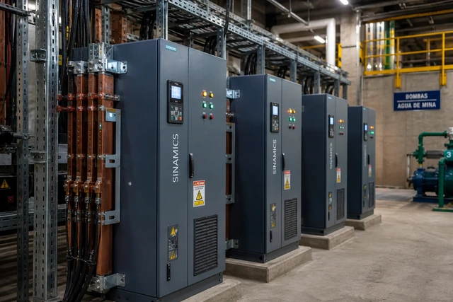
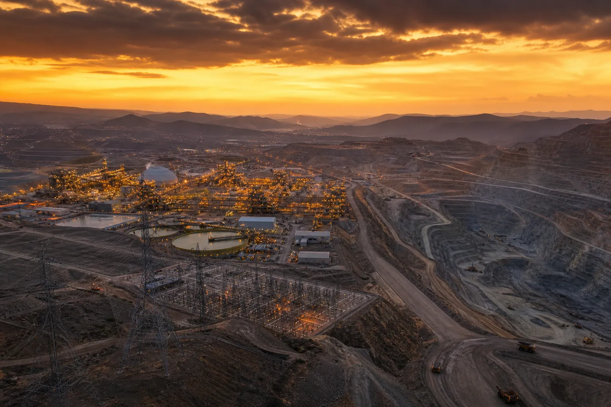
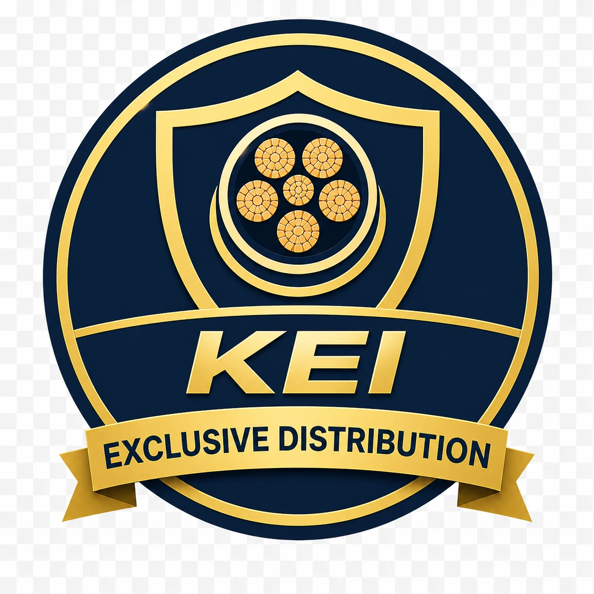
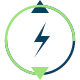
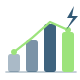

Diagnóstico
Diagnóstico y levantamiento eléctrico
Evaluación de criticidad, matriz de riesgos operativos y plan de intervención para sistemas eléctricos en mina y planta de beneficio.
EPC, procura y mantenimiento de sistemas eléctricos críticos para minería en México y Latinoamérica.
Ingeniería, procura y construcción de los sistemas eléctricos críticos que sostienen la planta minera: desde subestaciones hasta variadores para molinos, con responsabilidad única y 5 certificaciones ISO activas.
Evaluación de criticidad, matriz de riesgos operativos y plan de intervención para sistemas eléctricos en mina y planta de beneficio.

Subestaciones MT/AT, variadores Triol para molinos SAG y bombas de pulpa, electromecánica de planta con QA/QC documentado.

Pruebas SAT, energización y entrega operativa con cuadrillas especializadas para operaciones remotas en México y Latinoamérica.

La operación minera depende de sistemas eléctricos confiables que soporten ambientes severos, distancias extensas y cargas variables. Cada hora de paro impacta directo en la producción.

Sistemas redundantes y mantenimiento predictivo para reducir paros no planificados en concentradoras, chancado y bombeo.
Equipos especificados para polvo, humedad, vibración y altitud, con materiales y certificaciones acordes a la operación.

Variadores, calidad de energía y monitoreo SCADA para reducir consumo y proteger los activos críticos del proceso.
Diseñamos, suministramos y construimos los sistemas eléctricos y de control que sostienen la planta minera. Trabajamos con estándares internacionales y bajo nuestro sistema integrado ISO.
Subestaciones eléctricas industriales encapsuladas e intemperie, tableros, protecciones y plantas de fuerza para mina y planta.
Conocer más →Control de procesos para chancado, molienda, flotación y manejo de pulpa. Integración con sistemas existentes y reportes operativos.
Conocer más →Montaje de equipos, ductos, charolas, canalizaciones, puesta a tierra y aterrizaje de cargas críticas con trazabilidad QA/QC.
Conocer más →Suministro directo de cable de potencia, MT, AT y EAT bajo representación exclusiva KEI en México, con respaldo de fabricante.
Ver catálogo →Variadores de velocidad para cargas mineras: molinos SAG, bolas, bombas de pulpa, fajas transportadoras y ventiladores.
Caso minero →Iluminación industrial de alta intensidad y sistemas de detección, control y supresión de fuego para naves y subestaciones.
Conocer más →Cubrimos los frentes eléctricos críticos de la operación: desde el frente de extracción hasta el manejo de mineral y la planta de beneficio.
Presencia eléctrica EPC en cada etapa crítica de la operación
Metodología EPC integral con responsabilidad única desde el diseño hasta el soporte post-arranque.
Evaluación eléctrica del sitio, criticidad de activos y matriz de riesgo operativo.
Ingeniería básica y de detalle, especificación de equipos y suministro con KEI, Triol y socios estratégicos.
Montaje electromecánico, pruebas SAT, energización y entrega documentada bajo protocolos QA/QC.
Programas preventivos, predictivos y correctivos con cuadrillas para sitios remotos y respuesta a contingencias.
Combinamos representación directa de fabricantes, capacidad EPC propia y un sistema de gestión certificado para entregar resultados medibles a la mina.
Representación exclusiva KEI Wires & Cables en México para cables de potencia e inventario variadores Triol disponible para respuesta rápida.
Sistema integrado ISO 9001, 14001, 37001, 45001 y 50001: calidad, ambiente, anticorrupción, SySO y energía.
Ver certificaciones →Trayectoria comprobada en proyectos eléctricos críticos para industria pesada, energía y procesos.
Capacidad de despliegue multirregión con cuadrillas especializadas, logística y refacciones para operaciones mineras.
Cada frente de la mina exige una construcción de cable distinta. No es la misma especificación para una pala de cable que para un alimentador de subestación. Estas son las tres familias de cable KEI con las que cubrimos la operación minera completa, integradas al alcance EPC de VMS Energy.
Conductor flexible Clase 5 con aislamiento EPR para aplicaciones que enrollan y desenrollan cable de forma continua. Tensiones típicas 1.1–6.6 kV. Aplicaciones: palas eléctricas, perforadoras móviles, equipos de acarreo, transportadores móviles. Resistente a abrasión, impactos y ciclos térmicos.
¿Qué es un trailing cable? →Aislamiento XLPE para instalaciones fijas: subestaciones internas, alimentadores principales, líneas a chancado y molinos. Tensiones 6.6–22 kV (hasta 33 kV en proyectos grandes). Construcciones con armadura de acero para tramos enterrados o ductos con riesgo mecánico.
Ver catálogo MT/AT →Cables LSZH (low smoke, zero halogen) para túneles y espacios confinados, control multiconductor con pantalla EMC para PLC/SCADA, e instrumentación apantallada para señales analógicas. Cumplimiento NOM-001-SEDE y normas internacionales.
¿Qué es LSZH? →| Criterio | EPR (móviles) | XLPE (fijos) |
|---|---|---|
| Flexibilidad | Superior | Menor |
| Trailing / equipos móviles | Ideal | No recomendado |
| Subestación / alimentador fijo | Compatible | Ideal |
| Humedad severa | Mejor | Bueno |
| Rigidez dieléctrica | Buena | Superior |
Ambos aislamientos operan a 90 °C en régimen normal y 250 °C en cortocircuito. La decisión se basa en el tipo de instalación, no en la tensión.
Lo que aporta VMS Energy: No solo suministramos el cable correcto para cada frente. Especificamos, suministramos, instalamos y probamos como parte del alcance EPC del proyecto minero — con una sola responsabilidad técnica y logística.
Preparamos una propuesta con alcances, cronograma y KPI por área de planta. Atención directa de nuestro equipo de ingeniería.
Proyectos ejecutados en minería metálica, no metálica y minerales industriales con infraestructura eléctrica crítica.
Respuestas técnicas directas a las dudas más comunes del equipo de ingeniería y operaciones.